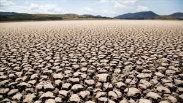

El agua es fundamental para la vida humana y desempeña un papel crucial en nuestra salud, a continuación, te comparto los aspectos más importantes de la relación entre el agua y la salud:
Hidratación adecuada
El agua es esencial para mantener una hidratación adecuada, el cuerpo humano está compuesto por aproximadamente un 60% de agua, y esta agua es necesaria para el funcionamiento de todos los órganos y sistemas del cuerpo.
Prevención de enfermedadesUna hidratación adecuada puede prevenir diversas enfermedades y problemas de salud: como la deshidratación ya que la falta de agua puede causar fatiga, mareos, dolor de cabeza y en casos graves daño a órganos vitales
Desigualdad en la distribución: No todas las regiones del mundo tienen el mismo acceso al agua, pero quienes sí lo tienen tienden a no valorar su escasez en otras partes del mundo, en lugares donde el agua es accesible, no se percibe de inmediato la crisis del agua que existe en otras áreas.
Falta de infraestructuras adecuadas: En algunos países, las infraestructuras para almacenar, distribuir y tratar el agua son deficientes, lo que provoca pérdidas significativas en el proceso.
Calidad del aguaEl agua que consumimos debe ser limpia y segura para evitar enfermedades transmitidas por el agua, como diarreas, cólera, y otras infecciones gastrointestinales, la calidad del agua es esencial para nuestra salud y debe cumplir con los estándares de potabilidad.
Impacto en el rendimiento físico y mentalLa hidratación también es clave para el rendimiento físico y mental, la deshidratación puede afectar la concentración, la memoria y la capacidad de tomar decisiones, así como disminuir el rendimiento físico.
Beneficios adicionalesEl agua también tiene propiedades que pueden ayudar a controlar el peso, a menudo, el cuerpo confunde la sed con el hambre, por lo que beber agua antes de las comidas puede ayudar a reducir el consumo excesivo de alimentos.

El agua es esencial para la salud general, y mantener una hidratación adecuada es fundamental para el bienestar físico, mental y emocional, además, la calidad del agua es un factor crítico para evitar enfermedades.